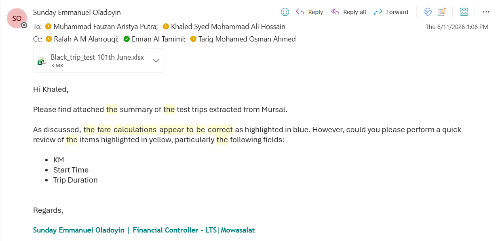

| # | Trial | Start | Stopwatch | Trip dur | Δ time | Trip km | Δ dist | Fare |
|---|---|---|---|---|---|---|---|---|
| 0 | Seat sensor | 11:50 | 7:33 | 7:08 | 25 s | 3.4 | 0.1 | 12 |
| 1 | Front | 10:32 | — | 7:58 | — | 3.3 | 0.1 | 11 |
| Route shorter this trial; stopwatch not used. | ||||||||
| 2 | Front | 10:42 | 7:38 | 7:03 | 35 s | 3.3 | 0.2 | 12 |
| 3 | Front | 10:52 | 8:32 | 7:42 | 50 s | 2.7 | 0.8 | 11 |
| App shut down mid-trip — distance under-recorded. | ||||||||
| 4 | Rear-R | 11:12 | 8:38 | 5:24 | 194 s | 2.4 | 0.9 | 10 |
| Tester's shirt blended with the seats — passenger detected ~3 min late. | ||||||||
| 5 | Rear-R | 11:27 | 8:04 | 7:38 | 26 s | 3.4 | 0.1 | 12 |
| Tester in white shirt — detection back in line with baseline. | ||||||||
| 6 | Rear-L | 11:39 | 7:30 | no start | — | — | — | — |
| Tester in white shirt; trip did not start — passenger never detected. | ||||||||
